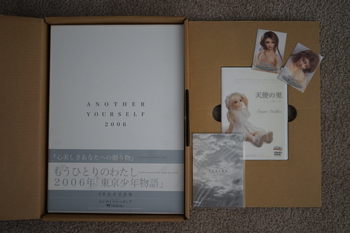
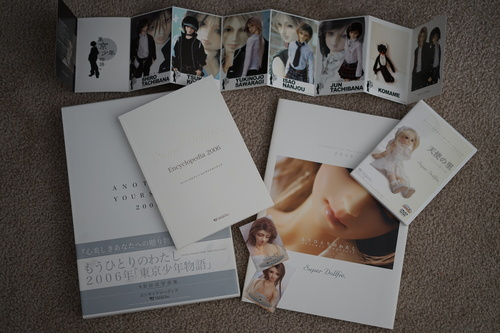

Back on the 13th, I bit the bullet and ordered Another Yourself 2006 along with the first 2 VdR doujinshi from Mandarake. I've been hesitating so long because I feared the shipping cost. The books were nearly free though! It was 1000 yen for all three. I chose not to order more doujins because I didn't want to get moved up to the next box size.
Shipping came out to 6600 yen. Painful desu. I paid it (and locked my debit card again) and it arrived 10/18. There was plenty of room left in the box for more ;__________; I really don't like ordering from Mandarake because I'm unable to optimize anything.
I wrote a bit about the contents on the doll publications page in the cafe. There's quite a bit in this one and it includes English!
I haven't actually read the Tokyo Boys Story plot before. I've never been super interested in the faces of the dolls in that story arc, so I wasn't sure why they were popular at all. After reading it, I get it!! The little stories make you feel that much more connected to the characters and dolls. I don't really see backstories written for fullset dolls much anymore and that kind of a bummer. Volks still does it a little. Maybe Ringdoll? Granado has a couple cute stories.

The encyclopedia finally explained what "Another Yourself" means. Volks is wishing that the owners of their dolls will modify their dolls to reflect theirselves and the stories they want to tell. The point is creativity and customization! These are dolls begging to be customized! Please customize your doll!

I finally took some photos of Liam and Cheby together again. It's been almost a year huh... Polar opposite boys!!


And Hina and Liam! Look at how cute their hands fit together ;____;


A couple months ago, Vega told me that SDGrB Kei was the same head as SD13B Tsuyoshi Maki. I looked up a little bit about Maki and the show/manga he was from, Himitsu. I was interested enough, so I've been putting on an episode or two while handsewing. I'm sure it's obvious by now that I'm not very far because I'll take any excuse not to handsew.
Himitsu's ED is illustrated by the mangaka, Reiko Shimizu and her work is beautiful!!! Maki is so beautiful and doll-like!
I wish Volks got a chance to redo Maki with their current skill level. Kei is gorgeous though *___*